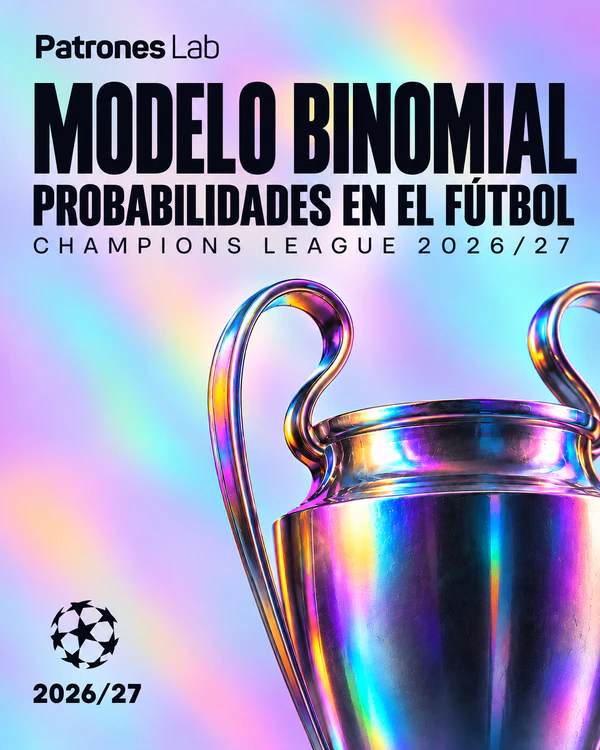

1
 Power BI
Power BI Qlik Cloud
Qlik Cloud Looker Studio
Looker Studio SQL Server
SQL Server
Verkenning
Context en doelInzicht in het vraagstuk, de te verbeteren beslissing, de betrokken gebruikers en het beoogde resultaat.
Data Analytics
Patrones Lab is een laboratorium voor data-analyse van alledaagse verschijnselen en vraagstukken uit de praktijk.
Hier vind je onafhankelijke projecten op basis van openbare data, gericht op het herkennen van patronen, het beschrijven van gedrag en het toelichten van bevindingen in hun context.
Het doel is om vragen te formuleren, data voor te bereiden, heldere analyses te maken en de resultaten visueel te presenteren.

Ik ben Malcolm Di Pietro Cagliari, actuaris en professional in Data & Analytics. Mijn loopbaan omvat Business Intelligence, bedrijfsrapportages, datamodellering en voorspellende analyses, met ervaring in onder meer het bankwezen, verzekeringen en de luchtvaart.
Mijn specialiteit is het verbinden van zakelijke behoeften met datagedreven oplossingen: het bepalen van KPI's, het structureren van informatie, het bouwen van dashboards en het ontwikkelen van modellen die helpen beter te begrijpen wat er gebeurt en beslissingen te nemen met meer inzicht in de context.
Inzicht in het vraagstuk, de te verbeteren beslissing, de betrokken gebruikers en het beoogde resultaat.
Beschikbare bronnen bepalen en hun herkomst, actualiteit, betrouwbaarheid en belangrijkste beperkingen onderzoeken.

SQL ServerData ordenen, opschonen en combineren tot een consistente en bruikbare dataset.
De analyse, het model of het dashboard ontwikkelen dat past bij het vastgestelde doel.
Nagaan of de resultaten samenhangend en stabiel zijn en aansluiten bij de bedrijfspraktijk.
Het eindresultaat documenteren, terugkerende processen automatiseren en feedback meenemen voor verdere verbeteringen.
Een selectie praktijkgerichte projecten met openbare data, een onderbouwde werkwijze en visuele resultaten. Gebruik de filters om te zoeken op vakgebied, hulpmiddel of type resultaat.

Analyse van het luchtverkeer in Spanje met openbare data van AENA, gericht op verkeersvolumes, patronen per luchthaven en verschillen tussen categorieën.

Verkennende analyse van Airbnb in Londen om prijzen, accommodatietypen, beschikbaarheid, minimumverblijven en verschillen tussen buurten te vergelijken.

Analyse van taxiritten in Chicago om ritduur, vraag, geografische spreiding en operationele patronen te onderzoeken.

Classificatiemodel met logistische regressie om binnen elk accommodatietype relatief dure en goedkope advertenties te herkennen.

Interactief dashboard in Looker Studio voor het verkennen van taxiritten in Chicago, operationele indicatoren, tijdspatronen en ophaal- en afzetlocaties.

Logistisch regressiemodel om de scoringskans van elk schot te schatten met openbare data van StatsBomb, validatie per wedstrijd en toepassing op het WK 2022 in Qatar.
Project openen
Kansmodel voor verwachte dreiging in het voetbal met openbare data van StatsBomb. Het schat de kans op een doelpunt in de volgende 5 acties.

✅ gepubliceerd
Onbegeleide clustering met K-means voor het opsporen van creditcardfraude.

✅ gepubliceerd
Begeleide classificatie met logistische regressie voor het opsporen van creditcardfraude.

✅ gepubliceerd
Onbegeleide clustering met DBSCAN om mogelijke creditcardfraude op te sporen.
Project openen
Analyse van statistieken van het WK 2022 met openbare data van StatsBomb, om individuele prestaties samen te vatten en spelers te vergelijken met een percentielenradar.

Geografische analyse van taxiritten in Chicago om drukke gebieden, stedelijke routes en de ruimtelijke concentratie van de vraag te herkennen.

Interactief Power BI-dashboard met Spotify Charts voor het analyseren van streams, ranglijsten, trends in de tijd en de geografische spreiding van muziek.

✅ gepubliceerd
Interactief Power BI-rapport voor het analyseren van leveranciersuitgaven, maandelijkse ontwikkelingen, verdeling per categorie, besparingen en geografische spreiding.

Simulatie van een miljoen scenario's voor het WK 2026 met Elo-ratings om de kansen op een halve finale, een finaleplaats en de wereldtitel te schatten.

Classificatiemodel om economische schade door weersverschijnselen te schatten, met een vergelijking tussen logistische regressie en een neuraal netwerk.

Geografische analyse van Airbnb-prijzen in Londen aan de hand van de afstand tot het centrum, buurten en geografische nabijheidsmaten.

Simulatie van een miljoen scenario's voor LaLiga 2026/27 met Elo-ratings om de kansen op de belangrijkste uitkomsten van het kampioenschap te schatten.

Doelpuntenmodel met een Poissonverdeling voor het berekenen van de aanvals- en verdedigingssterkte per team, gecombineerd met Monte Carlo-simulatie om de kansen in het kampioenschap te schatten.

Simulatie van een miljoen scenario's voor de Nations League 2026/27 met Elo-ratings en een Poisson-doelpuntenmodel om de kansen op groepswinst, doorgang in de knock-outfase en de titel te schatten.

Binomiaal model voor het analyseren van doelpunten- en uitslagkansen op basis van schoten en conversiepercentages van 36 clubs uit de Champions League 2026/27.
Voor professionele mogelijkheden, analytische samenwerking of projecten rond BI · ML · Dashboards.
e-mail: malcolm@patroneslab.com
Schrijf me en ik reageer zo snel mogelijk.